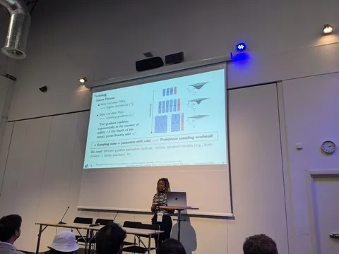
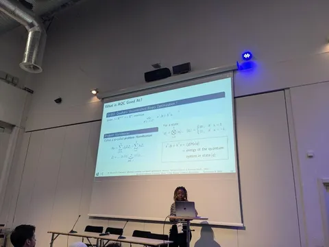
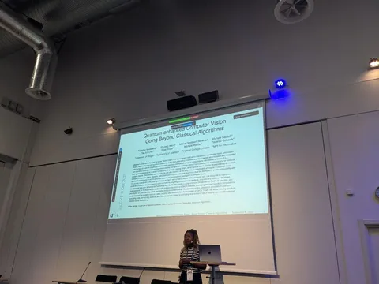
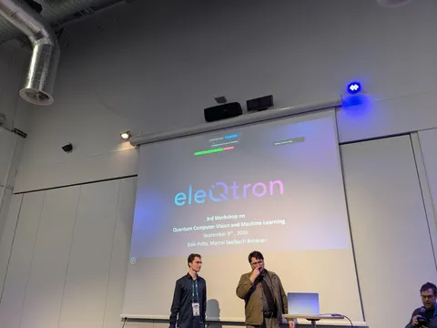

Наш коллега Александр Шишеня посетил воркшоп 3rd Workshop on Quantum Computer Vision and Machine Learning (QCVML) и рассказал, что там было интересного.
Начали с хорошего введения в квантовые вычисления от исследователя в Университете Зигена Natacha Kuete Meli. Впоследствии удалось пообщаться с ней лично, и она подтвердила описанные здесь выводы.
Вкратце идея в том, чтобы создать квантовую систему, состояние которой — решение целевой задачи. Сама система описывается уравнением Шредингера, соответственно и круг решаемых задач ограничен теми, которые вписываются в эту модель.
А вписывается в неё, например, дискретная (бинарная) квадратичная оптимизация или задача о назначениях — о ней в основном и рассказывали.
Всё это относится к адиабатическим квантовым вычислениям. В качестве ячеек памяти у нас кубиты (например, спин иона). Они вообще находятся в суперпозиции состояний, но при замере схлопываются в 0 или 1 — отсюда и бинарная оптимизация. К компьютерному зрению такой подход напрямую отношения не имеет.
Но есть ещё gate quantum computing. Здесь состояние кубита описывается амплитудами вероятности, что потенциально позволяет кодировать гораздо больше информации и решать в том числе задачи компьютерного зрения. Правда, чтобы получить информацию о состоянии, квантовую схему приходится запускать и измерять много раз: чем больше, тем точнее оценка. Пока практического применения в CV у этого подхода нет, но Natacha уверена, что в будущем квантовые вычисления найдут там своё место.
Затем выступали ребята из eleQtron — они выпускают квантовый компьютер на <=60 кубит. В качестве кубитов используют ионы иридия, удерживаемые магнитным полем, состоянием управляют с помощью микроволнового излучения и лазера.
Дальше ребята сравнивали квантовые компьютеры с классическими по принципу: «у нашего слона хобот длиннее, чем у вашего тигра».
Также рассказали о решении задачи трекинга объектов на видео на 60-кубитном (!) компьютере. Вы спросите: как на 60 кубитов поместить хотя бы один кадр, не то что нейронку, обрабатывающую видео? А никак. Вся детекция делается классически, у нас есть готовые баундингбоксы, а также матрица их схожести между кадрами.
На квантовом компьютере решается только задача матчинга баундинбоксов между кадрами. Как раз та самая задача дискретного квадратичного программирования.
Причём задачу эту приходится решать отжигом, то есть делается серия из запусков квантового компьютера и выход в итоге сходится к точному решению.
#YaECCV2026
CV Time



